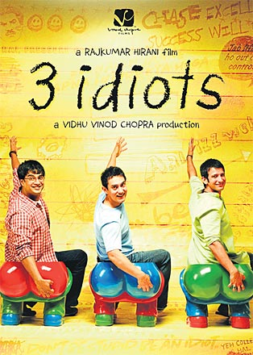
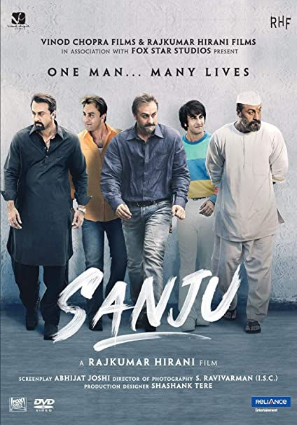

Rajkumar Hirani (born 20 November 1962) is an Indian film director and editor. Hirani only directed five Hindi films, which are Munna Bhai M.B.B.S (2003), Lage Raho Munnabhai (2006), 3 Idiots (2009), PK (2014) and Sanju (2018) and all five of his films have been commercial and critical successes.
One of the finest filmmakers in India, Rajkumar Hirani is known for making movies that blend entertainment with inspiration.
His films naturally attract the audience and never disappoint the critics. There is the perfect script, story and music that keeps one and all happy
Just like the unique traits and thought process, the names of his character are distinctive too- Phunsuk Wangdoo, Jagat Janani and Ranchoddas Shyamal Das Chanchad!
Another special thing about his movies is that there is always something that you take away from them. It might be something as simple as following your heart or sticking to morals.
Most have won several awards, including the national awards, and have often been regarded by the media and audiences as some of the most path-breaking films in the history of Hindi cinema
Funny satirical way of narrating the stories on the education system or the system in general with a subtle message encouraging idealism and humanism
His films naturally attract the audience and never disappoint the critics. There is the perfect script, story and music that keeps one and all happy
God-sent to the viewing public. Has made a handful of movie and each a gem. He manages blockbusters without the usual trappings. The mass appeal movies with a heart is his trademark.